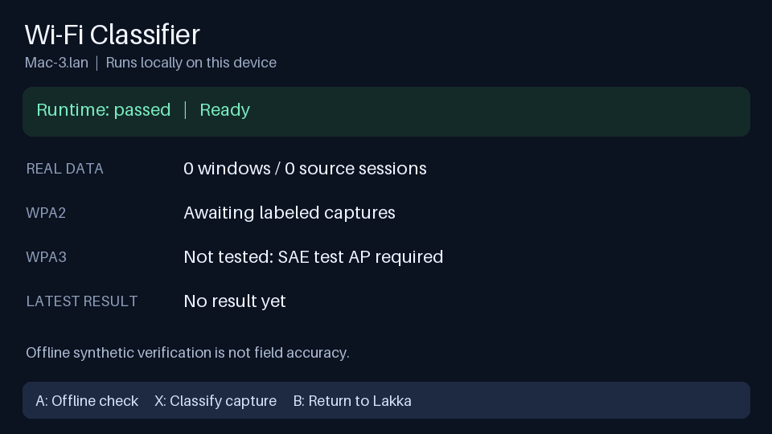
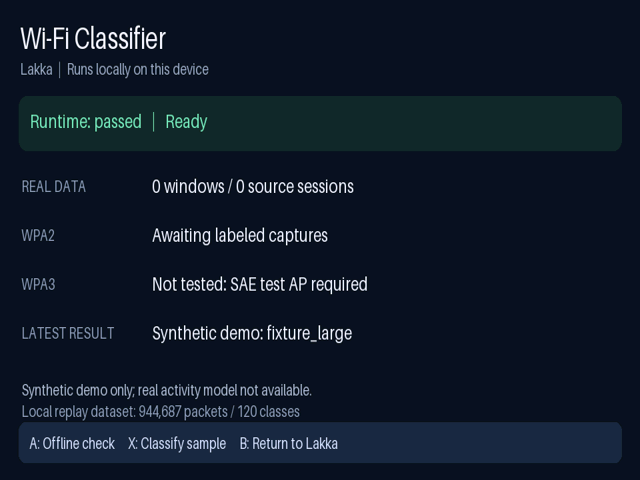

A capture-native, BSSID-scoped machine learning pipeline that classifies client observation windows from raw 802.11 monitor-mode metadata. Compatible with WPA2 (CCMP), WPA3 (SAE/GCMP), and TLS 1.3.
Modern encryption (WPA3-SAE, GCMP-256, TLS 1.3, ECH) renders deep packet inspection (DPI) obsolete. 802.Class classifies applications using unencrypted Layer 2 MAC header dynamics.
Works identical on WPA2-Personal, WPA2-Enterprise, and WPA3. Operates entirely above the encryption envelope without holding PSK or PTK keys.
Observes RF traffic passively on a channel-locked radio. Emits zero transmissions on the target wireless medium, preserving target environment stealth.
Includes a pure Lua 72-feature matrix multiplication engine directly in Wireshark's dissection loop, and a PyTorch Temporal Convolutional Network (TCN).
From raw radio packets to bounded, BSSID-scoped observation windows with rigorous unknown rejection.
Frames are filtered to the AP's radio BSSID. ToDS/FromDS flags distinguish Client-to-AP (Uplink) from AP-to-Client (Downlink). Subtypes 4/12 (Null / QoS-Null) and control/mesh frames are rejected.
Traffic is segmented per client MAC. An idle gap > 15.0 seconds automatically starts a fresh session sequence, preventing cross-burst correlation contamination.
For each frame: direction (+1/-1), mpdu_len, payload_len, iat_ms, log_iat, is_retry, seq_delta (modulo 4096), qos_tid, is_protected, subtype, duration, and Radiotap signal/rate indicators.
Observation windows of size N (e.g. 16 or 32 frames) are evaluated. Predictions below the calibrated threshold τ (e.g. 0.50) are safely rejected as unknown or insufficient_data.
| Channel # | Name | Description | Scope |
|---|---|---|---|
| 1 | direction | +1.0 for Uplink (ToDS=1), -1.0 for Downlink (FromDS=1) | BSSID-scoped |
| 2 - 3 | mpdu_len, payload_len | Wire physical length & estimated payload (deducting CCMP/GCMP envelope) | Frame |
| 4 - 5 | iat_ms, log_iat | Inter-arrival time relative to previous client frame (capped 60s) | Temporal |
| 6 - 7 | is_retry, seq_delta | 802.11 Retry flag & sequence delta (mod 4096) per direction | Sequence |
| 8 - 10 | qos_tid, has_qos, is_protected | WMM/QoS Traffic Identifier, QoS presence, and Protected bit | MAC Header |
| 11 - 18 | subtype, duration, signal/rate | 802.11 subtype, NAV duration, and Radiotap RSSI / MCS metrics | Physical Layer |
Simulate raw 802.11 monitor frame bursts right in your browser. Watch the sliding window compute rolling features and evaluate live application inference.
Integrates directly into your local Wireshark installation on macOS and Linux with wire-speed postdissection and custom extcap interfaces.
Implemented in pure Lua (wifi_app_classifier.lua). Performs in-memory 72-feature matrix multiplication for incoming 802.11 Data frames (wlan.fc.type == 2) without child process latency.
-- Display filter expressions:
wifi_app.prediction == "video_stream"
wifi_app.confidence >= 0.70
wifi_app.direction == "uplink" && wifi_app.protected == true
wifi_app.qos_tid == 6Appends live predictions directly to Wireshark's Info column: [App: video_stream (88%)]
Exposes two dedicated capture interfaces on Wireshark's welcome screen:
wifi_app_live): Passive monitor capture via dumpcap -I with automatic sample fallback on macOS.wifi_app_demo): Instantly streams real WPA2/WPA3 captures with smooth inter-frame pacing for demonstration.Tested and verified with wifi_app_helper.py --test-capture.


Why physical separation is required for scientifically sound wireless ML.
A monitor radio is passive: it cannot transmit test traffic. Running client apps and capturing on the same physical PHY introduces driver-specific artifacts and omits locally transmitted frames.
VMs do not create radio chains: USB pass-through grants exclusive access to one radio; it cannot split one antenna into multiple RF chains.
Our verified field topology:
Get up and running locally in under 2 minutes.
git clone https://github.com/Shubin123/802.class.git
cd 802.class
uv venv --python 3.12 .venv
source .venv/bin/activate
uv pip install -e '.[dev,display]'# Installs Lua postdissector, Extcap tools, and WiFi_App_Classifier profile
python scripts/install_wireshark_extension.py# Test live extcap FIFO streaming and classification
python wireshark/wifi_app_helper.py --test-capture
# Run full repository test suite (34 passing tests)
pytest -q# BSSID discovery from beacons
python infer/field_inference.py --pcap data/field/capture.pcapng --list-bssids
# Run full BSSID-scoped classification
python wireshark/wifi_app_helper.py --classify-capture data/field/cm4/cm4-wpa2-d85af33381ea-000.pcapng